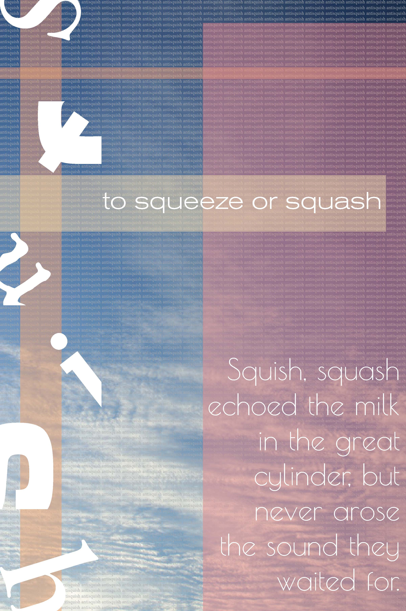

Amanda Grate

This is one of many different iterations of this "Squish" piece I created in the fall of 2020. While exploring type in a graphic design class, we were encouraged to explore combining different typefaces to create a word of our choice. The origional prompt was to use this typeface combination to play around with our word and then include that creation as part of a poster. We also included the defintiion as well as a web based example of how the word could be used. On this particular piece I heavily played with the idea of the anti-squish. I included a photo of the sky as well as layering the word "antisquish" over and over again in the background for more texture.